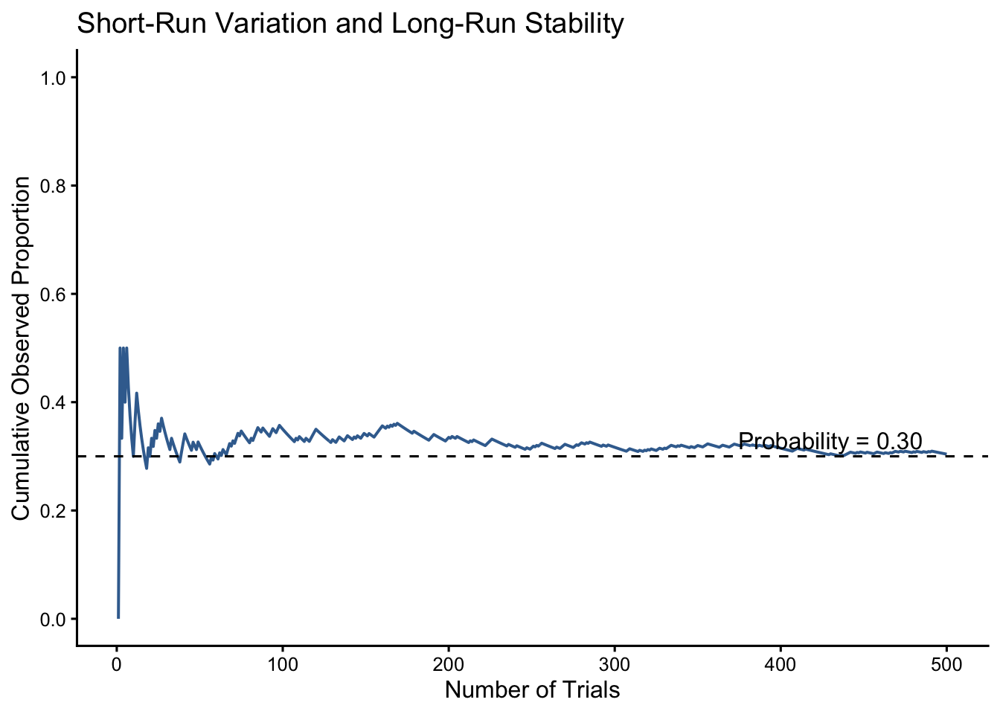

7 Understanding Probability
7.1 The Question
NoteCentral question
How does probability help us understand uncertainty in data?
Part I focused on describing observations that have already been collected. We organized data, visualized distributions, and summarized their center and variation. Part II asks a different question: what can observed data tell us about outcomes we have not observed or populations we cannot measure completely?
Answering that question requires probability. Probability does not eliminate uncertainty or predict every individual outcome. It provides a language for describing uncertainty, identifying long-run patterns, and determining whether an observed result is common or unusual under a particular set of assumptions.
Probability is therefore the foundation of statistical inference. This chapter provides only the concepts needed for the chapters that follow. Our goal is not to master every rule of probability, but to understand how probability helps us interpret distributions, samples, and statistical conclusions.
7.2 What You Will Learn
After completing this chapter, you should be able to:
- Explain probability as a numerical description of uncertainty.
- Interpret probability as a proportion or percentage.
- Distinguish theoretical probability from probability estimated using data.
- Explain why random outcomes vary in the short run but become more predictable over many observations.
- Connect probability to areas within a distribution.
- Explain how probability will be used in statistical inference.
7.3 Why Probability Matters in Criminal Justice
Criminal justice decisions frequently involve uncertainty:
- Will a person released before trial appear for court?
- Is a forensic test result likely under competing explanations?
- Could an apparent crime cluster have occurred through chance?
- How accurately does a screening tool identify a rare event?
- Is a difference between two samples larger than we would expect from sampling variation?
A probability describes uncertainty under specified conditions. It does not automatically tell us what decision should be made. Decisions also depend on the quality of the data, the consequences of errors, legal and ethical standards, and the assumptions used to calculate the probability.
WarningProbability is conditional on a model
A probability is not a fact detached from assumptions. It may depend on how outcomes are defined, how cases are selected, whether events are treated as independent, and whether the underlying model is appropriate.
7.4 Random Processes, Outcomes, and Events
A random process is a procedure that can produce more than one possible result and whose particular result cannot be known with certainty in advance. Examples include tossing a coin, rolling a die, randomly selecting a case file, or drawing a random sample from a population.
An outcome is one possible result of the process. The sample space, written as \(S\), is the set of all possible outcomes.
For one roll of a six-sided die:
\[ S=\{1,2,3,4,5,6\} \]
An event is one or more outcomes of interest. If event \(A\) is rolling an even number, then:
\[ A=\{2,4,6\} \]
Because three of the six equally likely outcomes satisfy the event:
\[ P(A)=\frac{3}{6}=0.50 \]
Probability values range from 0 to 1:
- \(P(A)=0\) means the event is impossible under the model.
- \(P(A)=1\) means the event is certain under the model.
- Values between 0 and 1 express different degrees of uncertainty.
A probability can also be expressed as a percentage. A probability of 0.25 is equivalent to 25%.
7.5 Theoretical and Empirical Probability
7.5.1 Theoretical Probability
A theoretical probability is derived from a model of the possible outcomes. When all outcomes are equally likely:
\[ P(A)=\frac{\text{Number of outcomes in }A}{\text{Total number of possible outcomes}} \]
For a fair six-sided die, the theoretical probability of rolling a value greater than 4 is:
\[ P(X>4)=\frac{2}{6}=\frac{1}{3}\approx0.3333 \]
This calculation depends on the assumption that the die is fair and all six outcomes are equally likely.
7.5.2 Empirical Probability
An empirical probability is estimated from observed outcomes:
\[ \widehat{P}(A)=\frac{\text{Number of times }A\text{ occurred}}{\text{Number of trials}} \]
Suppose an analyst reviews 200 randomly selected calls for service and finds that 54 involved a behavioral-health concern. The empirical probability is:
\[ \widehat{P}(\text{Behavioral-health concern})=\frac{54}{200}=0.27 \]
Among the 200 selected calls, 27% involved a behavioral-health concern. Whether that estimate applies to a larger population depends on how the calls were selected and what population they represent.
ImportantA proportion can describe observed data or estimate probability
The calculation may look the same, but the interpretation differs. A proportion describes the cases observed. An empirical probability uses observed relative frequency to estimate how often an event occurs in a defined process or population.
7.6 Short-Run Variability and Long-Run Stability
Random processes can appear erratic over a small number of trials. A fair coin can produce four heads in five tosses even though the probability of heads on each toss is 0.50. As the number of independent trials grows, the observed proportion tends to move closer to the underlying probability. This pattern is called the law of large numbers.
The law of large numbers does not mean that short-run imbalances must immediately correct themselves. After several heads, the probability of heads on the next toss remains 0.50 if the tosses are independent.
WarningThe gambler’s fallacy
The belief that a random outcome is “due” because it has not occurred recently is called the gambler’s fallacy. Independent trials do not remember previous outcomes. A run of heads does not make tails more likely on the next fair coin toss.
7.7 Probability and Distributions
In Part I, a distribution described how observed values were arranged. A probability distribution describes how likely different possible values are. Common values receive more probability, while unusual values receive less.
For a continuous distribution, probability is represented by area under the curve. The entire area equals 1, or 100%. The area below a value, above a value, or between two values represents the probability of observing a value in that region.
This is the main probability idea needed for the next chapter. The normal distribution will allow us to locate observations and determine how common or unusual they are.
7.8 Common and Unusual Outcomes
Suppose a statistical model indicates that an outcome as large as the one observed would occur only 3% of the time:
\[ P(\text{Outcome this large or larger})=0.03 \]
The outcome is possible, but it would be unusual if the assumptions of the model were correct. This is the basic reasoning used later in hypothesis testing: begin with an assumption, determine how sample results would vary by chance, and ask how likely the observed result would be.
WarningUnusual does not mean impossible
Low-probability events sometimes occur. A small probability is evidence to consider alongside the study design, data quality, assumptions, and substantive context. It is not proof by itself.
7.9 How Probability Supports Statistical Inference
Statistical inference uses sample data to draw conclusions about a larger population. Probability describes the uncertainty involved in moving from a sample to that population.
In the chapters that follow, probability will help us ask:
- How unusual is a score within a distribution?
- How much would a sample mean vary across repeated random samples?
- What range of population values is reasonably consistent with our sample?
- Could an observed difference have occurred through chance variation?
Statistical conclusions are therefore not statements of certainty. They are conclusions made while acknowledging and estimating uncertainty.
7.10 Check Your Understanding
Suppose 120 of 400 randomly selected incident reports involve property crime.
- What proportion of the selected reports involve property crime?
- Express that value as a probability and as a percentage.
- Does the result prove that the next selected report will involve property crime?
- Why might another random sample produce a slightly different proportion?
- What would you need to know before applying this estimate to all reports in the city?
NoteCheck your answers
- The observed proportion is \(120/400=0.30\).
- The estimated probability is 0.30, or 30%.
- No. It describes a pattern across cases, not a certain prediction for one case.
- Random samples differ because of chance variation.
- We would need to know how the reports were selected, what population and period they represent, and whether the sample is representative.
7.11 Data Investigation: Short-Run and Long-Run Probability
This activity can be completed individually and then pooled across the class.
- Predict how many heads you expect in 10 tosses of a fair coin.
- Toss the coin 10 times and record the sequence.
- Calculate the observed proportion of heads.
- Compare your observed proportion with the theoretical probability of 0.50.
- Combine your results with the class and calculate the class proportion.
- Compare the individual and pooled estimates.
- Explain why the pooled estimate will often be closer to 0.50 without claiming that it must be exactly 0.50.
The class results provide an empirical demonstration of short-run variability and long-run stability.
7.12 Test Your Knowledge: Probability and Samples
A researcher randomly selects 100 cases from a much larger population and finds that 38 resulted in a particular case outcome.
- Calculate the observed proportion of cases with the outcome.
- Write the estimated probability using probability notation.
- Interpret the probability as a percentage and as a long-run frequency.
- If another random sample of 100 cases is drawn, must exactly 38 have the outcome? Explain.
- Would a random sample of 1,000 cases generally provide a more stable estimate? Explain.
- Identify one reason the larger sample could still provide a misleading estimate.
NoteReview the answers
- The observed proportion is \(38/100=0.38\).
- \(\widehat{P}(\text{Outcome})=0.38\).
- The value is 38%, or approximately 38 outcomes per 100 cases over many observations under similar conditions.
- No. Another sample will probably differ somewhat because of chance variation.
- Yes. Larger random samples generally produce more stable estimates.
- A large sample can still be misleading if selection is biased, the outcome is measured poorly, relevant cases are missing, or the population has changed.
7.13 Project Connection: Identify Uncertainty
Connect probability to your semester investigation.
- Identify one proportion you might calculate using your data.
- Define the population to which you might want that proportion to apply.
- Identify one reason another sample might produce a different proportion.
- Identify one possible source of bias that would not be solved by increasing the sample size.
7.14 From Probability to Probability Distributions
Probability provides the bridge from describing observed data to reasoning about data we have not observed. The next chapter introduces the normal distribution. We will use its shape, center, and standard deviation to determine where values fall and how common or unusual they are.
7.15 Chapter Summary
- Probability provides a language for reasoning about uncertainty under specified assumptions.
- Theoretical probability follows from a model; empirical probability is estimated from observed relative frequency.
- Short sequences can vary substantially, while observed proportions tend to stabilize with many independent trials.
- Larger random samples generally reduce chance variation but do not eliminate bias.
- Probability is represented by area within a continuous probability distribution.
- Statistical inference uses probability to describe uncertainty when drawing conclusions from samples.
- Low-probability results are unusual under a model, but they are not impossible.
- A probability describes uncertainty but does not, by itself, prescribe a decision.
7.16 Key Terms
- Chance variation: Differences that occur because random processes do not produce identical results every time.
- Empirical probability: A probability estimated from observed relative frequency.
- Law of large numbers: The principle that an observed proportion tends to approach the underlying probability as the number of independent trials increases.
- Probability: A numerical description of uncertainty ranging from 0 to 1.
- Probability distribution: A description of possible values and how likely they are.
- Statistical inference: The process of using sample data to draw conclusions about a larger population.
- Theoretical probability: A probability derived from a model of possible outcomes.